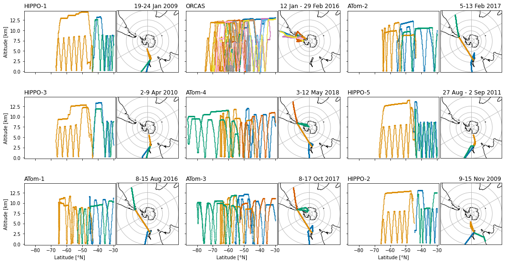
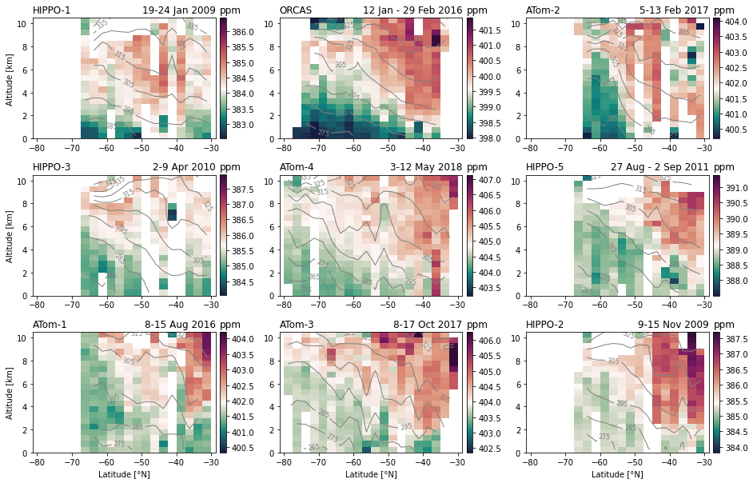

Airborne observations¶
%load_ext autoreload
%autoreload 2
from itertools import product
import numpy as np
import xarray as xr
xr.set_options(display_style='text')
import matplotlib.pyplot as plt
import matplotlib.gridspec as gridspec
import matplotlib.colors as colors
import cartopy.crs as ccrs
import seaborn as sns
import datasets
import figure_panels
import obs_aircraft
import util
Load the aircraft data¶
The data from the aircraft are returned as a pandas.DataFrame.
df = obs_aircraft.open_aircraft_data('obs')
df.head()
loading obs
| year | month | day | hour | min | sec | camp | flt | prof | lat | ... | co2mx | co2noaa | ch4noaa | co2mnoaa | co2x | ch4mqcls | campaign_id | flight_id | profile_id | date | |
|---|---|---|---|---|---|---|---|---|---|---|---|---|---|---|---|---|---|---|---|---|---|
| 0 | 2009 | 1 | 9 | 20 | 25 | 20.0 | 1 | 2 | 1 | 45.83098 | ... | NaN | NaN | NaN | NaN | NaN | NaN | HIPPO-1 | HIPPO-001-002 | HIPPO-001-002-001 | 2009-01-09 |
| 1 | 2009 | 1 | 9 | 20 | 25 | 30.0 | 1 | 2 | 1 | 45.83351 | ... | NaN | NaN | NaN | NaN | NaN | NaN | HIPPO-1 | HIPPO-001-002 | HIPPO-001-002-001 | 2009-01-09 |
| 2 | 2009 | 1 | 9 | 20 | 25 | 40.0 | 1 | 2 | 1 | 45.83660 | ... | NaN | NaN | NaN | NaN | NaN | NaN | HIPPO-1 | HIPPO-001-002 | HIPPO-001-002-001 | 2009-01-09 |
| 3 | 2009 | 1 | 9 | 20 | 25 | 50.0 | 1 | 2 | 1 | 45.84057 | ... | NaN | NaN | NaN | NaN | NaN | NaN | HIPPO-1 | HIPPO-001-002 | HIPPO-001-002-001 | 2009-01-09 |
| 4 | 2009 | 1 | 9 | 20 | 26 | 0.0 | 1 | 2 | 1 | 45.84671 | ... | NaN | NaN | NaN | NaN | NaN | NaN | HIPPO-1 | HIPPO-001-002 | HIPPO-001-002-001 | 2009-01-09 |
5 rows × 49 columns
Campaign details¶
campaign_info = obs_aircraft.get_campaign_info(clobber=False, lump_orcas=True)
campaign_mon = [c['month'] for c in campaign_info.values()]
I = np.argsort([c['month'] for c in campaign_info.values()])
campaigns = np.array(list(campaign_info.keys()))[I]
time_bound = np.array([c['time_bound'] for c in campaign_info.values()])[I]
HIPPO-1:
flights: ['HIPPO-001-006', 'HIPPO-001-007', 'HIPPO-001-008']
time: 2009-01-20
year: 2009
month: 1
day: 20
time_bound: ['2009-01-19' '2009-01-24']
co2_midtrop: 384.0980934046344
ch4_midtrop: 1735.9877611940308
sf6_midtrop: 6.44546875
co2_midtrop_each_sensor: {'co2pfp': 383.83666666666664, 'co2medusa': 384.065, 'co2': 384.0980934046344, 'co2ao2': 384.1803736842106, 'co2oms': 384.4950883838382}
co2_midtrop_multi_sensor: 384.13504442786996
co2_midtrop_multi_sensor_std: 0.2130667876906907
HIPPO-2:
flights: ['HIPPO-002-005', 'HIPPO-002-006', 'HIPPO-002-007']
time: 2009-11-11
year: 2009
month: 11
day: 11
time_bound: ['2009-11-09' '2009-11-15']
co2_midtrop: 385.4305322580645
ch4_midtrop: 1762.1661757719726
sf6_midtrop: 6.645344827586209
co2_midtrop_each_sensor: {'co2pfp': 385.41, 'co2medusa': 385.39267000000007, 'co2': 385.4305322580645, 'co2ao2': 385.4491370558374, 'co2oms': 385.38648337595885}
co2_midtrop_multi_sensor: 385.4137645379721
co2_midtrop_multi_sensor_std: 0.023391385322030903
HIPPO-3:
flights: ['HIPPO-003-005', 'HIPPO-003-006', 'HIPPO-003-007']
time: 2010-04-05
year: 2010
month: 4
day: 5
time_bound: ['2010-04-02' '2010-04-09']
co2_midtrop: 386.44500448979613
ch4_midtrop: 1745.93223880597
sf6_midtrop: nan
co2_midtrop_each_sensor: {'co2pfp': 385.614, 'co2medusa': 385.3078, 'co2': 386.44500448979613, 'co2ao2': 385.51033414634156, 'co2oms': 385.31982857142856}
co2_midtrop_multi_sensor: 385.6393934415133
co2_midtrop_multi_sensor_std: 0.41913868976853064
HIPPO-5:
flights: ['HIPPO-005-008', 'HIPPO-005-009', 'HIPPO-005-010']
time: 2011-08-29
year: 2011
month: 8
day: 29
time_bound: ['2011-08-27' '2011-09-02']
co2_midtrop: 388.7906872340429
ch4_midtrop: 1781.4356051873199
sf6_midtrop: 7.132295081967213
co2_midtrop_each_sensor: {'co2pfp': 389.5, 'co2medusa': 389.115575, 'co2': 388.7906872340429, 'co2ao2': 389.1697253218886, 'co2oms': 388.9364769975789}
co2_midtrop_multi_sensor: 389.1024929107021
co2_midtrop_multi_sensor_std: 0.2397862746795518
ORCAS:
flights: ['ORCAS-001-000', 'ORCAS-001-001', 'ORCAS-001-002', 'ORCAS-001-003', 'ORCAS-001-004', 'ORCAS-001-005', 'ORCAS-001-006', 'ORCAS-001-007', 'ORCAS-001-008', 'ORCAS-001-009', 'ORCAS-001-010', 'ORCAS-001-011', 'ORCAS-001-013', 'ORCAS-001-014', 'ORCAS-001-015', 'ORCAS-001-016', 'ORCAS-001-017', 'ORCAS-001-018', 'ORCAS-001-019']
time: 2016-02-03
year: 2016
month: 2
day: 3
time_bound: ['2016-01-12' '2016-02-29']
co2_midtrop: 399.4807513123356
ch4_midtrop: 1777.6292412193486
sf6_midtrop: nan
co2_midtrop_each_sensor: {'co2medusa': 399.78462380952374, 'co2': 399.4807513123356, 'co2ao2': 399.5074406779646, 'co2qcls': 399.5083681318686}
co2_midtrop_multi_sensor: 399.57029598292314
co2_midtrop_multi_sensor_std: 0.12423819197777629
ATom-1:
flights: ['ATom-001-005', 'ATom-001-006', 'ATom-001-007']
time: 2016-08-12
year: 2016
month: 8
day: 12
time_bound: ['2016-08-08' '2016-08-15']
co2_midtrop: 401.8209256342961
ch4_midtrop: 1807.2459388111874
sf6_midtrop: 8.725645161290323
co2_midtrop_each_sensor: {'co2medusa': 402.02111111111105, 'co2': 401.8209256342961, 'co2ao2': 402.07530161443543, 'co2qcls': 401.7788566985639}
co2_midtrop_multi_sensor: 401.9240487646016
co2_midtrop_multi_sensor_std: 0.12650458463735262
ATom-2:
flights: ['ATom-002-005', 'ATom-002-006', 'ATom-002-007']
time: 2017-02-09
year: 2017
month: 2
day: 9
time_bound: ['2017-02-05' '2017-02-13']
co2_midtrop: 401.6626432950187
ch4_midtrop: 1779.0338237547899
sf6_midtrop: 8.88076923076923
co2_midtrop_each_sensor: {'co2pfp': 401.82666666666665, 'co2medusa': 401.82, 'co2': 401.6626432950187, 'co2ao2': 401.98231889908277, 'co2qcls': 401.69255100000004}
co2_midtrop_multi_sensor: 401.79683597215364
co2_midtrop_multi_sensor_std: 0.11376589007001131
ATom-3:
flights: ['ATom-003-005', 'ATom-003-006', 'ATom-003-007', 'ATom-003-008']
time: 2017-10-12
year: 2017
month: 10
day: 12
time_bound: ['2017-10-08' '2017-10-17']
co2_midtrop: 403.8311729323306
ch4_midtrop: 1818.8640955605722
sf6_midtrop: 9.176737588652486
co2_midtrop_each_sensor: {'co2pfp': 403.982, 'co2medusa': 403.9666666666667, 'co2': 403.8311729323306, 'co2ao2': 404.10546837606836, 'co2qcls': 403.91164988888926}
co2_midtrop_multi_sensor: 403.959391572791
co2_midtrop_multi_sensor_std: 0.0901352190553517
ATom-4:
flights: ['ATom-004-005', 'ATom-004-006', 'ATom-004-007', 'ATom-004-008']
time: 2018-05-07
year: 2018
month: 5
day: 7
time_bound: ['2018-05-03' '2018-05-12']
co2_midtrop: 404.7298901542988
ch4_midtrop: 1810.0469434239528
sf6_midtrop: 9.346344827586199
co2_midtrop_each_sensor: {'co2pfp': 404.8257142857143, 'co2medusa': 404.7911764705882, 'co2': 404.7298901542988, 'co2ao2': 405.03511262376213, 'co2qcls': 404.8040194386701}
co2_midtrop_multi_sensor: 404.83718259460676
co2_midtrop_multi_sensor_std: 0.10395753426897729
Flight tracks¶
ncol = 3
nrow = 3
fig = plt.figure(figsize=(18, 10))
gs_outer = gridspec.GridSpec(
nrows=nrow, ncols=ncol,
wspace=0.05, hspace=0.01,
)
for c, (i, j) in enumerate(product(range(nrow), range(ncol))):
gs_inner = gs_outer[i, j].subgridspec(1, 100, wspace=0.2)
axMap = fig.add_subplot(gs_inner[0, 60:], projection=ccrs.Gnomonic(central_latitude=-90.0, central_longitude=0.0)) #ccrs.SouthPolarStereo())
axSex = fig.add_subplot(gs_inner[0, :60])
axMap.coastlines('110m')
axMap.set_extent([180, -180, -90, -30], crs=ccrs.PlateCarree())
axMap.gridlines()
df_sub = obs_aircraft.groups_get_dataframe(df, campaigns[c], lump_orcas=True)
fight_ids = list(df_sub.flight_id.unique())
datestr = obs_aircraft.campaign_datestr(time_bound[c])
palette_colors = sns.color_palette(figure_panels.sns_palette, len(fight_ids)).as_hex()
for n, flight_id in enumerate(fight_ids):
df_sub_sub = df_sub.loc[df_sub.flight_id == flight_id]
axMap.plot(
df_sub_sub.lon, df_sub_sub.lat,
'.',
markersize=1,
color=palette_colors[n],
transform=ccrs.PlateCarree(),
)
axSex.plot(
df_sub_sub.lat, df_sub_sub.alt*1e-3,
'.',
markersize=1,
color=palette_colors[n],
)
axSex.set_ylim((-0.2, 14.8))
axSex.set_xlim(-87.25, -28.75)
if j == 0:
axSex.set_ylabel('Altitude [km]')
else:
axSex.set_yticklabels([])
if i == nrow - 1:
axSex.set_xlabel('Latitude [°N]')
else:
axSex.set_xticklabels([])
axSex.set_title(campaigns[c], loc='left')
axSex.set_title(datestr, x=1.68, ha='right')
l, b, w, h = axSex.get_position().bounds
axSex.set_position([l, b+0.034, w*0.99, h*0.72])
util.savefig('flight-tracks')

Meridional CO2 sections¶
Load latitude-altitude bin-averaged dataset¶
ds = datasets.aircraft_sections()
ds
<xarray.Dataset>
Dimensions: (z: 22, y: 20, time: 9, ye: 20, ze: 23)
Coordinates:
ALT (z, y) float64 0.25 0.25 0.25 0.25 ... 10.75 10.75 10.75 10.75
LAT (z, y) float64 -78.75 -76.25 -73.75 ... -36.25 -33.75 -31.25
campaigns (time) <U7 'HIPPO-1' 'HIPPO-2' 'HIPPO-3' ... 'ATom-3' 'ATom-4'
month (time) int64 1 11 4 8 2 8 2 10 5
* time (time) datetime64[ns] 2009-01-20 2009-11-11 ... 2018-05-07
* y (y) float64 -78.75 -76.25 -73.75 ... -36.25 -33.75 -31.25
* ye (ye) float64 -80.0 -77.5 -75.0 -72.5 ... -37.5 -35.0 -32.5
year (time) int64 2009 2009 2010 2011 2016 2016 2017 2017 2018
* z (z) float64 0.25 0.75 1.25 1.75 2.25 ... 9.25 9.75 10.25 10.75
* ze (ze) float64 0.0 0.5 1.0 1.5 2.0 ... 9.0 9.5 10.0 10.5 11.0
Data variables:
CO2_binned (time, z, y) float64 nan nan nan nan ... 406.0 405.9 405.6
DCO2_binned (time, z, y) float64 nan nan nan nan ... 1.148 1.03 0.7236
N_CO2 (time, z, y) float64 nan nan nan nan ... 56.0 209.0 252.0 66.0
N_DCO2 (time, z, y) float64 nan nan nan nan ... 56.0 209.0 252.0 66.0
THETA (time, z, y) float64 nan nan nan nan ... 327.8 336.2 336.9
THETA_binned (time, z, y) float64 nan nan nan nan ... 327.3 336.5 337.4Visualize sections¶
fig, axs = util.canvas(3, 3,
figsize=(16/3, 10/3),
use_gridspec=True,
hspace=0.3, wspace=0.12,
width_ratios=[1, 1, 1,],
)
for n, i in enumerate(np.argsort(ds.month.values)):
ax = axs[np.unravel_index(n, (3, 3))]
if not np.isnan(ds.DCO2_binned.isel(time=i)).all():
co2_ref = campaign_info[ds.campaigns.values[i]]['co2_midtrop_multi_sensor']
vmin, vmax = np.array(figure_panels.co2_anom_bounds) + co2_ref
divnorm = colors.TwoSlopeNorm(vmin=vmin, vcenter=co2_ref, vmax=vmax)
cf = ax.pcolormesh(
ds.y, ds.z, ds.CO2_binned.isel(time=i),
norm=divnorm,
cmap=figure_panels.cmap,
shading='nearest',
)
cs = ax.contour(
ds.LAT, ds.ALT, ds.THETA.isel(time=i),
levels=np.arange(255., 350., 10.),
linewidths=1,
colors='gray')
lb = plt.clabel(cs, fontsize=8, inline=True, fmt='%d')
cb = plt.colorbar(cf, ax=ax, pad=0.02)
cb.ax.set_title('ppm', loc='left')
tb = campaign_info[ds.campaigns.values[i]]['time_bound']
date_str = obs_aircraft.campaign_datestr(tb)
ax.set_title(date_str, loc='right')
ax.set_title(ds.campaigns.values[i], loc='left')
ax.set_ylim((0, 10.5))
ax.set_xlim(-81.25, -28.75)
if n%ncol == 0:
ax.set_ylabel('Altitude [km]')
if n >= (nrow-1) * ncol:
ax.set_xlabel('Latitude [°N]')
util.savefig(f'aircraft-sections')
